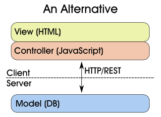

I’m sure I’m not the first to suggest this, but here goes.
Ever since somebody first thought of applying the Model-View-Controller paradigm to the web, we’ve had this:

The View is a conflation of HTML and JavaScript. JavaScript is an afterthought, a gimmick to make pages “dynamic.” All the real action is in the Controller, which talks to the database, processes the internal application logic, and renders templates before sending complete pages back to the client.
But what if we implement the Controller entirely in JavaScript?

Now we can put the Controller on the client, and build a RESTful HTTP interface to communicate with the database.
{kind=link}
Obviously there are many issues to consider. First and foremost is making sure that rogue clients cannot do anything to the database they’re not supposed to. But that’s a manageable problem — Amazon S3 is a good example. Apps that run entirely in the client can even be made more secure than their server-based counterparts, because encryption can be implemented entirely in the client, so that the server never sees the unencrypted data. (Clipperz, an password-storage service, calls this a zero-knowledge web app.)
There are some interesting possibilities. For example, the entire application, including the current state of the model, can be downloaded as a single web page for off-line use. (Clipperz supports this.) Also, the same application could connect to multiple data sources. And as with any RESTful architecture, back-end scaling is relatively easy.
Update July 10, 2008: I’m always amazed when one of my posts show up on Reddit. Maybe it was the diagrams. In any case, thanks to everyone who sent in comments. A couple responses:
- Yes, in a sense I’ve described Ajax. But most Ajax-related code around the web these days is still in the “dynamic view” mode rather than the “client-side controller” mode.
- I like Sun’s MVC diagram in which the View takes an active role in rendering the model rather than being just a template. It’s actually quite similar to what I’m suggesting here.
- Some MVC frameworks, such as Ruby on Rails, insist that logic in the View is bad, but then they include all these Ajax view helpers, so it’s a bit of a mixed message.
- I’m not insisting that all business logic be implemented client-side. Rather, I’m assuming some kind of “smart” database, with a RESTful front-end, that’s capable of containing business logic. Back in the day, these were SQL stored procedures. Now it’s probably something like CouchDB.
- Yes, this design is bad for search engines, bookmarks, and deep linking. But there are plenty of cases where those don’t matter. Look at Google Mail, for example. It basically follows the design I’ve laid out here: the entire app is one HTML page (or a very few pages) with behavior implemented in client-side JavaScript.
{kind=link}
Update August 7, 2008: This is an example of the code-on-demand style described in Roy Fielding’s REST thesis. Link from Joe Gregorio.
You’re making a wrong assumption that a View “is” HTML. In a properly developed framework, a View *renders* the HTML – or any other kind of output. It is also wrong to assume that the Views talk to Models through Controllers. Both these mistakes are popular because of how most new MVC frameworks are [incorrectly] implemented.
Please see this drawing:
http://java.sun.com/blueprints/guidelines/designing_enterprise_applications_2e/images/app-archa2.gif
Been there done that. It is not a bad idea, but not that great either:
a) making pages bookmarkable relies on an ugly hack when Javascript is the controller.
b) finding good developers who love Javascript is a challenge. I personally prefer to work in Java even if it is more verbose, because the dev environments make it so nice.
c) templating (for HTML) in Javascript works but is limited.
d) for apps that are less webby Google GWT already does it for you
This is interesting, and has been suggested before; a good example is CouchDB with its integrated interface written entirely in javascript/REST. Google also, have created a templating language entirely in javascript, which I suppose is some sort of moving the controlling part.
The problem I foresee in this context, that you also mention, is that for any kind of application that rely on permissions, this is going to become a headache for the developers. One way to solve it is to create a layer on top of the DB handling this kind of stuff, but by doing that, you’re in essence creating the controller twice. One for logic, one for permissions. There are of course applications where this is not an issue, but permissions are a big part of most applications these days.
I agree that it would be very cool to move processing logic to the client side, although I’m not entirely sure we can trust todays browsers with the responsibility.
I’ve had good experiences with this approach, wiring components with a bus in the browser and REST calls to the backend. The beauty is having no GUI logik (presentation, controller) on the server.
Peace
-stephan
http://stephan.reposita.org
Hi Stuart:
You’re definitely not the first to think of this :)
We use this technique for all the smart services in our embedded ethernet appliances, and it has some wonderful benefits for that space:
– No template rendering, so only a very simple web server is required (I think we have ~300 lines of C)
– Most resources (other than RESTful queries) can be served direct from FLASH/ROM
I might write up a decent article on how we built this stuff in the next few days.
–Chris
Using OpenAJAX Hub as a JS message bus.
http://www.openajax.org/member/wiki/OpenAjax_Hub_1.0_Specification
Peace
-stephan
this is what GWT is about.
Interesting idea. Have you seen http://javascriptmvc.com/index.html. This framework might take it to the extreme, but might potentially be a step in the direction you are suggesting.
Have a look at Sproutcore.com and what’s going on at 280North with their 280Slides web app.
Sounds really good… I’d love to see a framework built on this (preferably ruby :-) ).
You’ve just invented AJAX! (the totally seo-hostile, inaccessible-without-js overkill variant)
You can even move whole MVC to the client side:
http://280slides.com/
Right,
So you want all your business rules coded in Javascript ?
I suppose its true, one day we will all be Javascript biyatches
This is exactly the model I am developing my current application with, its a perfect fit for us,
The diagram might be misleading, in the case of couchdb where its possible to implement business rules inside the database its fine, but in the case of most databases, a scripting langauge still sits in front and handles all the REST calls, the web server simply serves static html / js / css / images, and javascript is used to populate any dynamic
data, which are served as REST calls.
The major problem with this is that as mentioned it completely ruins accessibility, for applications that dont really mind about google and deep links dont make sense its fine, it works very well together with a distributed backends such as ec2 / slicehost. but that doesnt fit for a most web applications. Its something ive been trying to get my head around, but havent come up with a nice solution as of yet.
“the totally seo-hostile, inaccessible-without-js overkill variant…”
Remember guys, this is for pseudo-desktop apps so I don’t really want it to be accessible.
I also don’t think it’s bad to require js. AND css. they are open standards and built into browsers.
All you have to do is add some content and let the users know what’s going on.
I’d like to see some sort of sproutcore/merb hybred.
.